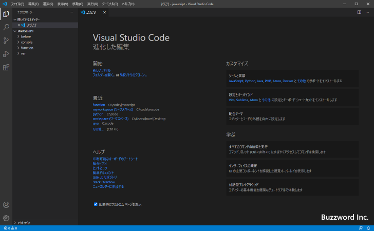
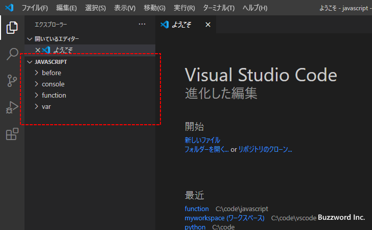
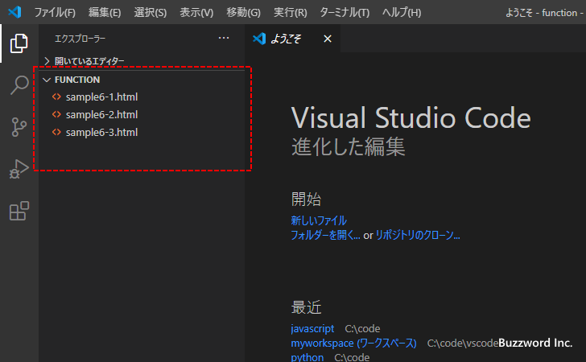
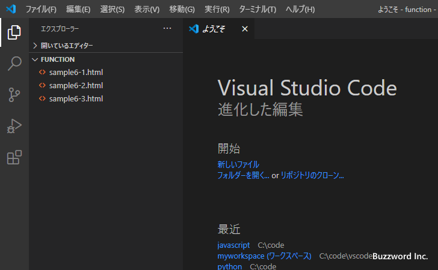
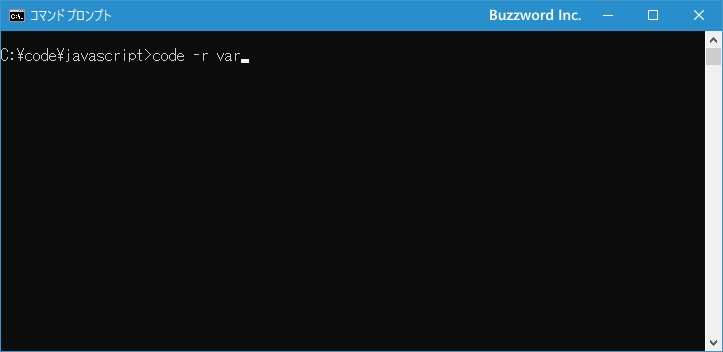
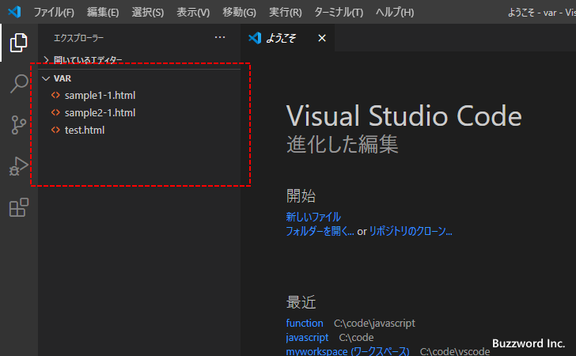
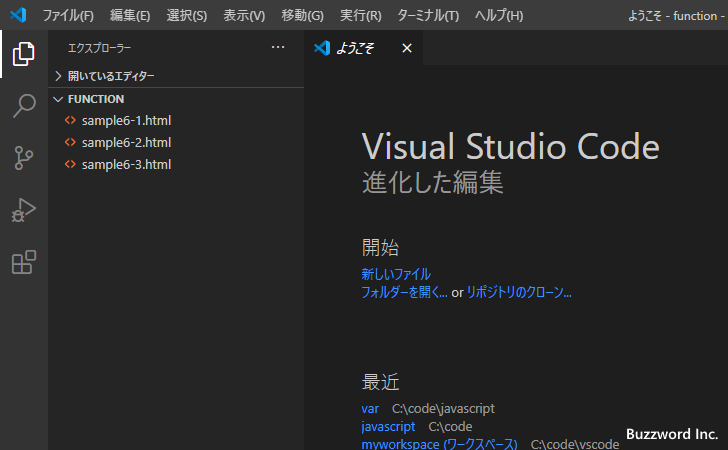
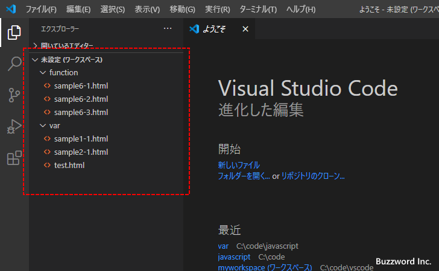
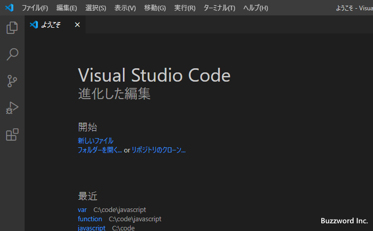
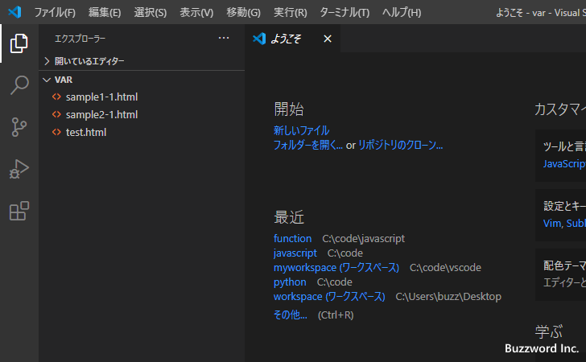

コマンドプロンプトからフォルダを開く
Visual Studio Code はコマンドプロンプトから起動することができますが、コマンドを実行するときにフォルダを指定することで Visual Studio Code を起動したときにフォルダを開いたり、既に起動していた場合は新しいウィンドウや既存のウィンドウでフォルダを開くことができます。ここではコマンドプロンプトからフォルダを開く方法について解説します。
Visual Studio Codeを起動してフォルダを開く
Windows 環境を例に試してみます。 PATH が設定されている場合、コマンドプロンプトから code と実行することで Visual Studio Code を起動することができますが、引数にフォルダ名を指定することで起動したあとで指定したフォルダを開くことができます。
code フォルダ名
フォルダ名は現在のフォルダの位置から相対パスで指定するか絶対パスで指定します。またカレントフォルダを開く場合には「.」を指定してください。
では実際に試してみます。コマンドプロンプトを起動し、開きたいフォルダに移動したあとでカレントフォルダを開くために次のように実行します。
code .
Visual Studio Code が起動し、コマンド実行時に指定したフォルダが開きました。


今度はカレントフォルダのサブフォルダである function フォルダを指定して起動してみます。
code function
Visual Studio Code が起動し、コマンド実行時に指定したフォルダが開きました。

現在のウィンドウでフォルダを開く
既に Visual Studio Code が起動している状態で、現在のウィンドウで指定するフォルダを開くにはコマンドプロンプトから次のように実行します。
code -r フォルダ名
なお Visual Studio Code で別のフォルダを開いていた場合、そのフォルダは閉じられた上で指定したフォルダが引きら来ますので注意してください。
それでは実際に試してみます。次のように Visual Studio Code が起動してフォルダが開いている状態から試します。

コマンドプロンプトを起動し、開きたいフォルダを相対パスか絶対パスで指定して次のように実行します。
code -r var

既存のウィンドウで開いていたフォルダが閉じられたあと指定したフォルダが開きました。

現在のウィンドウでフォルダを追加して開く
別のフォルダが開いているウィンドウに対して追加する形でフォルダを開くにはコマンドプロンプトから次のように実行します。
code -a フォルダ名
これは Visual Studio Code の「ファイル」メニューの中の「フォルダをワークスペースに追加」をクリックした場合と同じ動作となります。つまり新しいワークスペースを作成し、既に開いていたフォルダと新しく指定したフォルダがワークスペースに追加されることになります。(ワークスペースいついては「ワークスペースを使って複数のフォルダを同時に開く」を参照されてください)。
それでは実際に試してみます。次のように Visual Studio Code が起動してフォルダが開いている状態から試します。

コマンドプロンプトを起動し、開きたいフォルダを相対パスか絶対パスで指定して次のように実行します。
code -a var
既存のウィンドウで開いていたフォルダが開いたまま新しいフォルダが開きました。

新しいウィンドウでフォルダを開く
既に Visual Studio Code が起動している状態で、現在のウィンドウとは別に新しいウィンドウを開いてフォルダを開くにはコマンドプロンプトから次のように実行します。(フォルダの場合は -n を付けても何も指定しなくても同じ結果となります)。
code フォルダ名 code -n フォルダ名
それでは実際に試してみます。次のように Visual Studio Code が起動している状態から試します。

コマンドプロンプトを起動し、開きたいフォルダを相対パスか絶対パスで指定して次のように実行します。(今回は絶対パスで指定しました)。
code -n c:\code\javascript\var
既存のウィンドウとは別の新しいウィンドウが開き、指定したフォルダが開きました。

-- --
コマンドプロンプトからフォルダを開く方法について解説しました。
( Written by Tatsuo Ikura )

著者 / TATSUO IKURA
初心者～中級者の方を対象としたプログラミング方法や開発環境の構築の解説を行うサイトの運営を行っています。